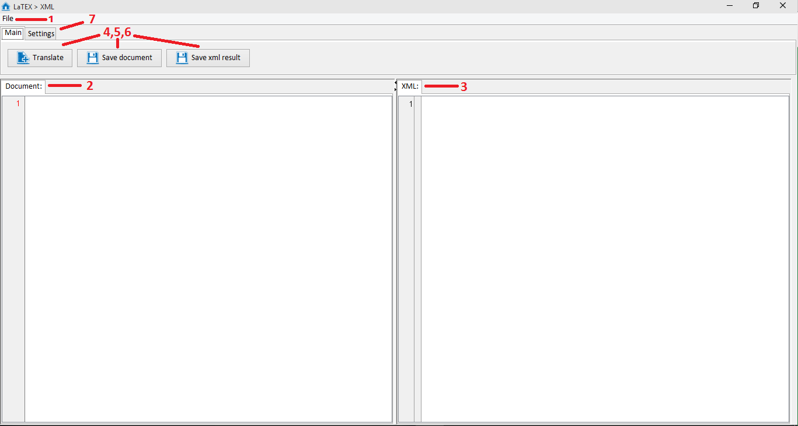
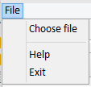
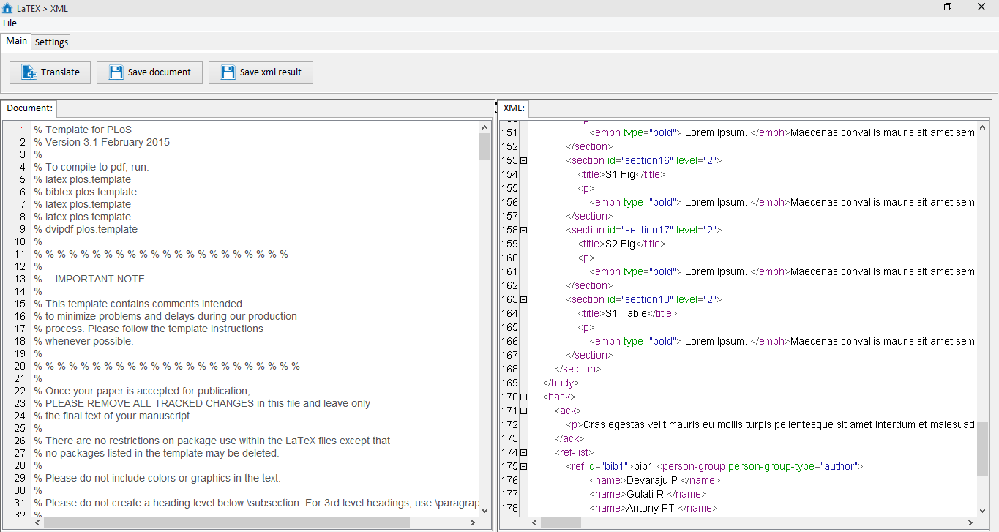
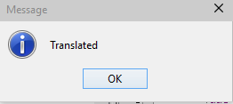

Interface


2. Document pane - pane where the latex document that you chosen for translating will be showed. You can edit document, latex tags are highlighted for easy use.

3. XML pane - place where result xml file will be showed. There you will see result after pressing translate button(4).

4. Translate button - begin translating document, after finishing translating you will see notification:

5. Save document button - this button saves LaTEX document. You have to save latex document after you edited it, for correct translation of edited document.
6. Save xml result button - this button open file explorer for you to choose place where to save result xml.
7. Setting tab - tab contains 3 tabs:
ISO:
If you want to use ISO symbol replacing system than you should mark it. More about ISO symbols here HTML ISO-8859-1 Reference

XML file:
Here you are able to set name of result XML. Result XML will be saved using this name.

Formulas:
In this tab you choose how program will translate latex formulas.
LaTeX - leave it, as it is in LaTeX syntax.
MathML - translate it to MathML using JLaTeXMath
Images - convert formulas to images using SnuggleTeX

Created with the Personal Edition of HelpNDoc: Easily create EPub books